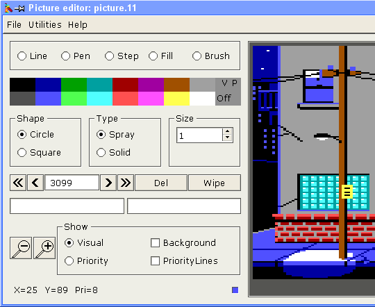

To use the picture editor, simply double-click on a picture resource in the main window or select 'Picture Editor' from the 'Tools' menu or toolbar. You can have several picture editor windows up at a time.
The picture editor looks like this: (the picture part of the screenshot is cut to reduce the image size)

This is pretty self explanatory. See the tool selection below.
The tool buttons
Line: This line tool is what has been called the absolute line in the AGI picture documentation. It draws a line from one point to any other point on the screen. Once you click on the picture surface, a virtual line follows the mouse cursor until you click on the next point. This is very much how most graphics packages work. The virtual line will continue this behaviour until you press the right hand mouse button on the picture surface. The tool remains "chosen" and you can continue drawing lines without re-selecting the tool until you click the secondary mouse button. The same applies to all the tools.
The AGI picture code used is 0xF6.
Pen: The pen tool is what has been called the relative line in the AGI picture documentation. I called it pen firstly because its nice and short, and secondly because when you think about it, the relative line is used for finer details, which is what I associate with pen drawing. The pen tool operates very much like the line tool except that it has a restriction on the length of the line which is reflected by the fact that the virtual line will only follow the cursor to its boundary. Right clicking turns the tool off as was mentioned for line above. The AGI picture code used is 0xF7.
Step: A strange name for a strange tool. This tool is what I called the x-corner and y-corner in the AGI picture documentation for want of a better name. I called it step because the nature of this tool makes it very easy to draw 'steps'. The behaviour of this tool is a bit different from the previously mentioned tools in that the destination point must lie on a certain line. The virtual line once again reflects this and will only let you draw a line to an acceptable destination. I have combined both the 0xF4 and the 0xF5 picture codes into this one tool. The codes used depends of the direction taken by the first line. This means that initially you have a choice of going vertical OR horizontal, but once that first click is made, the program restrict you to one plane from then on. Right clicking once again turns the tool off.
Fill: This needs no explanation. Choose a colour, click on a white spot and it fills it in for you. Right clicking on the picture surface once again turns the tool off. The AGI picture code used is 0xF8.
If you click on non-white spot, the area will be re-filled with the new color. This option is somewhat buggy. Remember: save early, save often.
Brush: This tool is the most involved tool. It corresponds with codes 0xF9 and 0xFA. An artist will set up the desired brush characteristics with the brush state interface, select the brush tool, and then start using it. It doesn't necessarily have to be done in this order, the program is quite robust in this respect. You can even change the brush characteristics half way through using the brush tool and every thing will be taken care of. Once again, right clicking on the picture surface disables the tool. AGI picture code 0xF9 is used to say what characteristics to give the brush, and code 0xFA gives the positions and pattern if it is needed.
The 'off' button is directly related to the palette buttons. It turns off visual or priority drawing depending on which mouse button is pressed. The left mouse button disabled visual drawing, the right mouse button disables priority drawing. It is important to realise that even though both the visual and priority colours may be turned off, the buffer still accepts drawing actions and places them in the buffer, they just won't be able to be seen on the picture surface or in AGI when you final incorporate it into an AGI program. Usually the off button is used to turn off one of the colours so that work can be done on only one of the screens. The AGI picture codes used are 0xF1 for disabling the visual colour and 0xF3 for disabling the priority colour.
As the navigation buttons are used, the value in the buffer position edit field will change. This field gives the offset in bytes from the start of the picture code. You can click on this field and enter a value to go directly to this position in the buffer. This means that you don't have to waste time using the navigation buttons. Of course, the value you enter might be in the middle of a drawing action. For this reason, the program searches backwards from the position entered until it finds the start of the drawing action that includes the entered position as part of its data. It would not do to allow data to be added to the picture code in the middle of an existing drawing action.
The navigation buttons and buffer position edit field allow you to go back and make changes to existing data or insert something that you forgot to draw. As we shall see by the next section, in combination with the delete button, these features can be very powerful.
The power of using this button is that you can experiment with various things such as the colour of an object like a table top. All you would do is navigate to the 0xF0 code that sets the colour of the table top, push the delete button, and the push the desired new colour on the palette bar. To see the change, move back to the end of the picture.
The background image should have a width of 320 pixels and height of 168 pixels. It can be bigger, but the rest of the image will be cut off.
When you load the background image, the checkbutton 'Background' is automatically switched on. At any stage you can switch back to normal to see the white parts of the screen as they should be.
You can zoom in or out of the picture to a maximum of 4x. The default zoom is 2x.
L, l, F1: Line tool P, p, F2: Pen tool S, s, F3: Step tool F, f, F4: Fill tool B, b, F5: Brush tool Home, Left, Right, and End keys: Same as the navigation buttons. Del key: Same as the delete button F10: Toggle the background picture TAB: switch between visual and priority screens